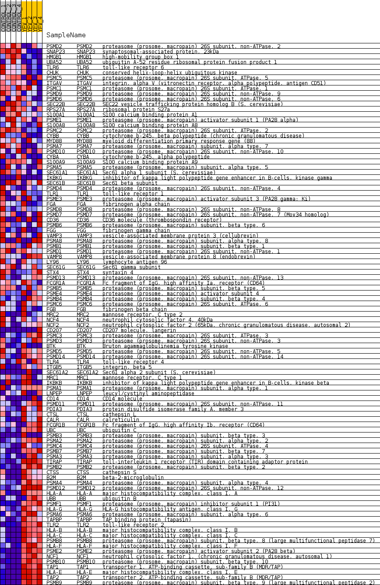
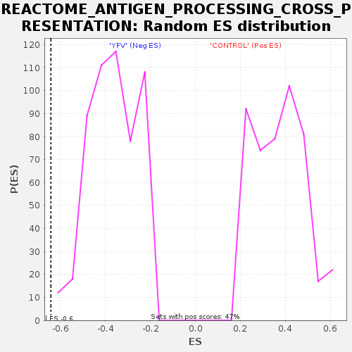

Profile of the Running ES Score & Positions of GeneSet Members on the Rank Ordered List
| Dataset | MATRIZ_GSE99081_collapsed_to_symbols.gsea_CLASE_99081.cls#CONTROL_versus_YFV |
| Phenotype | gsea_CLASE_99081.cls#CONTROL_versus_YFV |
| Upregulated in class | YFV |
| GeneSet | REACTOME_ANTIGEN_PROCESSING_CROSS_PRESENTATION |
| Enrichment Score (ES) | -0.6418498 |
| Normalized Enrichment Score (NES) | -1.7610989 |
| Nominal p-value | 0.0 |
| FDR q-value | 0.029675292 |
| FWER p-Value | 0.284 |
| SYMBOL | TITLE | RANK IN GENE LIST | RANK METRIC SCORE | RUNNING ES | CORE ENRICHMENT | |
|---|---|---|---|---|---|---|
| 1 | PSMD2 | proteasome (prosome, macropain) 26S subunit, non-ATPase, 2 | 711 | 0.738 | -0.0307 | No |
| 2 | SNAP23 | synaptosomal-associated protein, 23kDa | 1090 | 0.620 | -0.0428 | No |
| 3 | HMGB1 | high-mobility group box 1 | 1447 | 0.539 | -0.0551 | No |
| 4 | UBA52 | ubiquitin A-52 residue ribosomal protein fusion product 1 | 1969 | 0.488 | -0.0785 | No |
| 5 | TLR6 | toll-like receptor 6 | 2302 | 0.440 | -0.0911 | No |
| 6 | CHUK | conserved helix-loop-helix ubiquitous kinase | 2761 | 0.373 | -0.1127 | No |
| 7 | PSMC5 | proteasome (prosome, macropain) 26S subunit, ATPase, 5 | 3127 | 0.329 | -0.1294 | No |
| 8 | ITGAV | integrin, alpha V (vitronectin receptor, alpha polypeptide, antigen CD51) | 3607 | 0.278 | -0.1540 | No |
| 9 | PSMC1 | proteasome (prosome, macropain) 26S subunit, ATPase, 1 | 3697 | 0.267 | -0.1547 | No |
| 10 | PSMD9 | proteasome (prosome, macropain) 26S subunit, non-ATPase, 9 | 3732 | 0.263 | -0.1520 | No |
| 11 | PSMD6 | proteasome (prosome, macropain) 26S subunit, non-ATPase, 6 | 3986 | 0.243 | -0.1633 | No |
| 12 | SEC22B | SEC22 vesicle trafficking protein homolog B (S. cerevisiae) | 4063 | 0.238 | -0.1637 | No |
| 13 | RPS27A | ribosomal protein S27a | 4134 | 0.232 | -0.1638 | No |
| 14 | S100A1 | S100 calcium binding protein A1 | 4206 | 0.227 | -0.1641 | No |
| 15 | PSME1 | proteasome (prosome, macropain) activator subunit 1 (PA28 alpha) | 4391 | 0.212 | -0.1716 | No |
| 16 | S100A8 | S100 calcium binding protein A8 | 4515 | 0.201 | -0.1756 | No |
| 17 | PSMC2 | proteasome (prosome, macropain) 26S subunit, ATPase, 2 | 4826 | 0.173 | -0.1917 | No |
| 18 | CYBB | cytochrome b-245, beta polypeptide (chronic granulomatous disease) | 4913 | 0.165 | -0.1940 | No |
| 19 | MYD88 | myeloid differentiation primary response gene (88) | 5233 | 0.135 | -0.2113 | No |
| 20 | PSMA7 | proteasome (prosome, macropain) subunit, alpha type, 7 | 5238 | 0.134 | -0.2091 | No |
| 21 | PSMD10 | proteasome (prosome, macropain) 26S subunit, non-ATPase, 10 | 5332 | 0.127 | -0.2126 | No |
| 22 | CYBA | cytochrome b-245, alpha polypeptide | 5352 | 0.126 | -0.2115 | No |
| 23 | S100A9 | S100 calcium binding protein A9 | 5461 | 0.117 | -0.2161 | No |
| 24 | PSMA5 | proteasome (prosome, macropain) subunit, alpha type, 5 | 5659 | 0.102 | -0.2264 | No |
| 25 | SEC61A1 | Sec61 alpha 1 subunit (S. cerevisiae) | 5847 | 0.088 | -0.2364 | No |
| 26 | IKBKG | inhibitor of kappa light polypeptide gene enhancer in B-cells, kinase gamma | 5852 | 0.088 | -0.2351 | No |
| 27 | SEC61B | Sec61 beta subunit | 6283 | 0.054 | -0.2607 | No |
| 28 | PSMD4 | proteasome (prosome, macropain) 26S subunit, non-ATPase, 4 | 6348 | 0.049 | -0.2638 | No |
| 29 | TLR1 | toll-like receptor 1 | 6498 | 0.038 | -0.2723 | No |
| 30 | PSME3 | proteasome (prosome, macropain) activator subunit 3 (PA28 gamma; Ki) | 6661 | 0.029 | -0.2819 | No |
| 31 | FGA | fibrinogen alpha chain | 6671 | 0.028 | -0.2819 | No |
| 32 | PSMD8 | proteasome (prosome, macropain) 26S subunit, non-ATPase, 8 | 6710 | 0.026 | -0.2838 | No |
| 33 | PSMD7 | proteasome (prosome, macropain) 26S subunit, non-ATPase, 7 (Mov34 homolog) | 6854 | 0.018 | -0.2923 | No |
| 34 | CD36 | CD36 molecule (thrombospondin receptor) | 7039 | 0.008 | -0.3036 | No |
| 35 | PSMB6 | proteasome (prosome, macropain) subunit, beta type, 6 | 7048 | 0.008 | -0.3039 | No |
| 36 | FGG | fibrinogen gamma chain | 7174 | 0.001 | -0.3117 | No |
| 37 | VAMP3 | vesicle-associated membrane protein 3 (cellubrevin) | 9535 | -0.005 | -0.4578 | No |
| 38 | PSMA8 | proteasome (prosome, macropain) subunit, alpha type, 8 | 9584 | -0.007 | -0.4607 | No |
| 39 | PSMB1 | proteasome (prosome, macropain) subunit, beta type, 1 | 9745 | -0.014 | -0.4703 | No |
| 40 | PSMD1 | proteasome (prosome, macropain) 26S subunit, non-ATPase, 1 | 10102 | -0.030 | -0.4918 | No |
| 41 | VAMP8 | vesicle-associated membrane protein 8 (endobrevin) | 10122 | -0.032 | -0.4925 | No |
| 42 | LY96 | lymphocyte antigen 96 | 10196 | -0.037 | -0.4963 | No |
| 43 | SEC61G | Sec61 gamma subunit | 10387 | -0.050 | -0.5072 | No |
| 44 | STX4 | syntaxin 4 | 10414 | -0.052 | -0.5078 | No |
| 45 | PSMD13 | proteasome (prosome, macropain) 26S subunit, non-ATPase, 13 | 10422 | -0.053 | -0.5073 | No |
| 46 | FCGR1A | Fc fragment of IgG, high affinity Ia, receptor (CD64) | 10433 | -0.054 | -0.5069 | No |
| 47 | PSMB5 | proteasome (prosome, macropain) subunit, beta type, 5 | 10473 | -0.058 | -0.5083 | No |
| 48 | PSME4 | proteasome (prosome, macropain) activator subunit 4 | 10799 | -0.085 | -0.5269 | No |
| 49 | PSMB4 | proteasome (prosome, macropain) subunit, beta type, 4 | 10839 | -0.088 | -0.5277 | No |
| 50 | PSMC6 | proteasome (prosome, macropain) 26S subunit, ATPase, 6 | 11010 | -0.102 | -0.5364 | No |
| 51 | FGB | fibrinogen beta chain | 11121 | -0.112 | -0.5412 | No |
| 52 | MRC2 | mannose receptor, C type 2 | 11162 | -0.117 | -0.5415 | No |
| 53 | NCF4 | neutrophil cytosolic factor 4, 40kDa | 11187 | -0.119 | -0.5409 | No |
| 54 | NCF2 | neutrophil cytosolic factor 2 (65kDa, chronic granulomatous disease, autosomal 2) | 11213 | -0.121 | -0.5402 | No |
| 55 | CD207 | CD207 molecule, langerin | 11352 | -0.134 | -0.5463 | No |
| 56 | PSMC3 | proteasome (prosome, macropain) 26S subunit, ATPase, 3 | 11528 | -0.149 | -0.5545 | No |
| 57 | PSMD3 | proteasome (prosome, macropain) 26S subunit, non-ATPase, 3 | 11846 | -0.178 | -0.5709 | No |
| 58 | BTK | Bruton agammaglobulinemia tyrosine kinase | 11860 | -0.179 | -0.5684 | No |
| 59 | PSMD5 | proteasome (prosome, macropain) 26S subunit, non-ATPase, 5 | 11911 | -0.185 | -0.5682 | No |
| 60 | PSMD14 | proteasome (prosome, macropain) 26S subunit, non-ATPase, 14 | 11924 | -0.186 | -0.5655 | No |
| 61 | TLR4 | toll-like receptor 4 | 11969 | -0.190 | -0.5648 | No |
| 62 | ITGB5 | integrin, beta 5 | 12019 | -0.195 | -0.5643 | No |
| 63 | SEC61A2 | Sec61 alpha 2 subunit (S. cerevisiae) | 12205 | -0.214 | -0.5719 | No |
| 64 | MRC1 | mannose receptor, C type 1 | 12438 | -0.237 | -0.5820 | No |
| 65 | IKBKB | inhibitor of kappa light polypeptide gene enhancer in B-cells, kinase beta | 12590 | -0.253 | -0.5867 | No |
| 66 | PSMA1 | proteasome (prosome, macropain) subunit, alpha type, 1 | 12891 | -0.287 | -0.6001 | No |
| 67 | LNPEP | leucyl/cystinyl aminopeptidase | 13052 | -0.307 | -0.6045 | No |
| 68 | CD14 | CD14 molecule | 13468 | -0.360 | -0.6236 | No |
| 69 | PSMD11 | proteasome (prosome, macropain) 26S subunit, non-ATPase, 11 | 13564 | -0.374 | -0.6227 | No |
| 70 | PDIA3 | protein disulfide isomerase family A, member 3 | 13568 | -0.375 | -0.6161 | No |
| 71 | CTSL | cathepsin L | 13933 | -0.429 | -0.6309 | No |
| 72 | CALR | calreticulin | 14016 | -0.444 | -0.6279 | No |
| 73 | FCGR1B | Fc fragment of IgG, high affinity Ib, receptor (CD64) | 14175 | -0.478 | -0.6290 | No |
| 74 | UBC | ubiquitin C | 14182 | -0.479 | -0.6207 | No |
| 75 | PSMB3 | proteasome (prosome, macropain) subunit, beta type, 3 | 14438 | -0.500 | -0.6274 | No |
| 76 | PSMA2 | proteasome (prosome, macropain) subunit, alpha type, 2 | 14672 | -0.535 | -0.6321 | Yes |
| 77 | PSMC4 | proteasome (prosome, macropain) 26S subunit, ATPase, 4 | 14766 | -0.557 | -0.6278 | Yes |
| 78 | PSMB7 | proteasome (prosome, macropain) subunit, beta type, 7 | 14794 | -0.565 | -0.6192 | Yes |
| 79 | PSMA3 | proteasome (prosome, macropain) subunit, alpha type, 3 | 14958 | -0.609 | -0.6182 | Yes |
| 80 | TIRAP | toll-interleukin 1 receptor (TIR) domain containing adaptor protein | 15030 | -0.633 | -0.6112 | Yes |
| 81 | PSMB2 | proteasome (prosome, macropain) subunit, beta type, 2 | 15120 | -0.662 | -0.6047 | Yes |
| 82 | CTSS | cathepsin S | 15345 | -0.762 | -0.6047 | Yes |
| 83 | B2M | beta-2-microglobulin | 15466 | -0.811 | -0.5975 | Yes |
| 84 | PSMA4 | proteasome (prosome, macropain) subunit, alpha type, 4 | 15508 | -0.833 | -0.5849 | Yes |
| 85 | PSMD12 | proteasome (prosome, macropain) 26S subunit, non-ATPase, 12 | 15525 | -0.844 | -0.5705 | Yes |
| 86 | HLA-A | major histocompatibility complex, class I, A | 15527 | -0.844 | -0.5553 | Yes |
| 87 | UBB | ubiquitin B | 15642 | -0.918 | -0.5457 | Yes |
| 88 | PSMF1 | proteasome (prosome, macropain) inhibitor subunit 1 (PI31) | 15701 | -0.986 | -0.5314 | Yes |
| 89 | HLA-G | HLA-G histocompatibility antigen, class I, G | 15750 | -1.037 | -0.5155 | Yes |
| 90 | PSMA6 | proteasome (prosome, macropain) subunit, alpha type, 6 | 15762 | -1.053 | -0.4971 | Yes |
| 91 | TAPBP | TAP binding protein (tapasin) | 15917 | -1.327 | -0.4826 | Yes |
| 92 | TLR2 | toll-like receptor 2 | 15980 | -1.508 | -0.4591 | Yes |
| 93 | HLA-B | major histocompatibility complex, class I, B | 15985 | -1.547 | -0.4312 | Yes |
| 94 | HLA-C | major histocompatibility complex, class I, C | 15993 | -1.566 | -0.4033 | Yes |
| 95 | PSMB8 | proteasome (prosome, macropain) subunit, beta type, 8 (large multifunctional peptidase 7) | 16014 | -1.655 | -0.3745 | Yes |
| 96 | HLA-F | major histocompatibility complex, class I, F | 16048 | -1.825 | -0.3434 | Yes |
| 97 | PSME2 | proteasome (prosome, macropain) activator subunit 2 (PA28 beta) | 16061 | -1.905 | -0.3096 | Yes |
| 98 | NCF1 | neutrophil cytosolic factor 1, (chronic granulomatous disease, autosomal 1) | 16120 | -2.377 | -0.2700 | Yes |
| 99 | PSMB10 | proteasome (prosome, macropain) subunit, beta type, 10 | 16150 | -2.694 | -0.2229 | Yes |
| 100 | TAP1 | transporter 1, ATP-binding cassette, sub-family B (MDR/TAP) | 16153 | -2.724 | -0.1736 | Yes |
| 101 | HLA-E | major histocompatibility complex, class I, E | 16160 | -2.828 | -0.1226 | Yes |
| 102 | TAP2 | transporter 2, ATP-binding cassette, sub-family B (MDR/TAP) | 16188 | -3.407 | -0.0625 | Yes |
| 103 | PSMB9 | proteasome (prosome, macropain) subunit, beta type, 9 (large multifunctional peptidase 2) | 16195 | -3.614 | 0.0027 | Yes |

